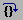
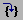
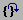
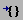

Once installed, set
the _NT_SYMBOL_PATH environment variable. I also recommend that
you add the Windbg installation directory to your PATH.
If you're feeling ambitious, you could grab this file and save it to a location that is easy to type. You'll need to type its path when you try to load it later.
cdb for text mode debugging or windbg for GUI-p <pid> command line option.
-z <path-to-dump> to examine a minidump
-o to debug multiple processes with a single debugger
| Command | gdb | windbg | windbg keyboard accelerator | windbg toolbar button | notes |
|---|---|---|---|---|---|
| Continue Execution | c |
g |
F5 | ||
| Set breakpoint (address) | break <address> |
bp <address> |
|||
| Set breakpoint (unresolved symbol) | break <location> |
bu <location> |
|||
| Set breakpoint (source line) | break <source line> |
bp `<source line>` |
F9 at caret location | (toggle) | |
| Set watchpoint | watch/rwatch/awatch |
ba w/r/r |
|||
| Step over | next |
p |
F10 |  | |
| Step into | step |
t |
F11 |  | |
| Step out | finish |
gu |
Shift + F11 |  | |
| List breakpoints | info breakpoints |
bl |
|||
| Disable breakpoint | disable |
bd |
|||
| Enable breakpoint | enable |
be |
|||
| Clear breakpoint | clear |
bc |
F9 at caret location | (toggle) | |
| Run to location | advance |
pa |
F7 at caret location |  | |
| Current Thread Backtrace | bt |
k |
Alt + 6 | ||
| Switch non-volatile register context to frame | f <frame number> |
.frame /r /c <frame number> |
|||
| List so/dll | info sharedlibrary |
lm |
|||
| List processes | |* |
Alt + 9 | |||
| List threads | info threads |
~* |
Alt + 9 | ||
| Switch current thread | thread <thread number> |
~<thread number> s |
|||
| Break on .so/.dll load | catch load <regex> |
sxe ld:<module> |
|||
| Ignore signal/exception | handle <signal> nostop |
sxd av |
|||
| Load symbols for module | add-symbol-file |
.reload <module> |
|||
| Local variables in current stack frame | info locals |
dv |
Alt + 3 | ||
| Arguments for current stack frame | info args |
kb 1 |
|||
| Symbol lookup | info (functions|variables) <regexp> |
x <module!symbol> |
May use * and ? as glob-style wildcards |
||
| Registers | info registers |
r |
Alt + 4 |
|. |
Current process |
|# |
Faulting process |
|* |
All processes |
|<index> |
Process at index |
|~<pid> |
Process by ID |
Note that this syntax is identical to thread syntax except for the fact that it uses | instead of ~
~. |
Current thread |
~# |
Faulting thread |
~* |
All threads |
~<index> |
Thread at index |
~~<tid> |
Thread by ID |
Note that this syntax is identical to process syntax except for the fact that it uses ~ instead of |
This syntax may be used as a prefix to restrict the scope of certain subcommands:
| Command | Description |
|---|---|
f |
Freeze thread |
u |
Thaw thread |
s |
Switch current thread |
~0 bp <address> |
Set a breakpoint to fire only for the main thread |
WARNING: Some thread subcommands may use the same abbreviation as regular commands but have a significantly different meaning!
Example: Freeze all threads except for main thread
~* f
~0 u
(The f command is "fill memory" in non-thread command contexts)
| Command | Description |
|---|---|
!gle |
Get the current thread's "last error" value (Win32 errno) |
!error <code> |
Look up the human-readable description of error code |
!sym noisy |
Debug logging for symbol resolver |
!sym quiet |
Revert to quiet symbol resolution |
!wow64exts.sw |
Switch between 32-bit and 64-bit modes (Windbg 64-bit only) |
.nvload <path-to-natvis-file> |
Load natvis definitions (requires WinDbg 10) |
.dump /mfh <path-to-dump-file> |
Save current debugging state to minidump |
!analyze -hang -v |
Query the kernel to find out why the currently selected thread is hung |
There are three expression evaluators: MASM, C++ and NatVis. MASM is the default. To change the default, see the .expr command.
NatVis is only available with the dx command (see below).
You can also override on a per-expression basis by wrapping your expression with @@masm(...) or @@c++(...).
To immediately evaluate an expression on the command line, use ? for MASM or ?? for C++. References to register names must be prefixed by @. For example:
?? (@eax + 0n15)
Prints the value of eax + 15 (Use 0n prefix for decimal literals)
Old and busted: dt <module!name> <address>
New hotness (WinDbg 10): dx <C++ expression>
.nvload command to load visualizers.